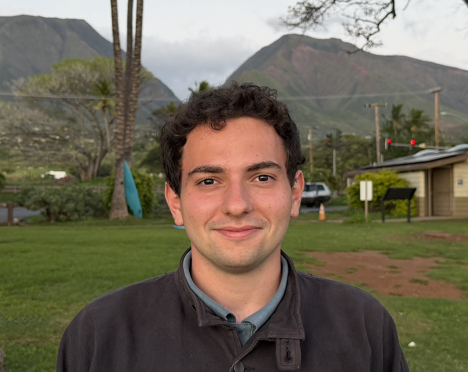
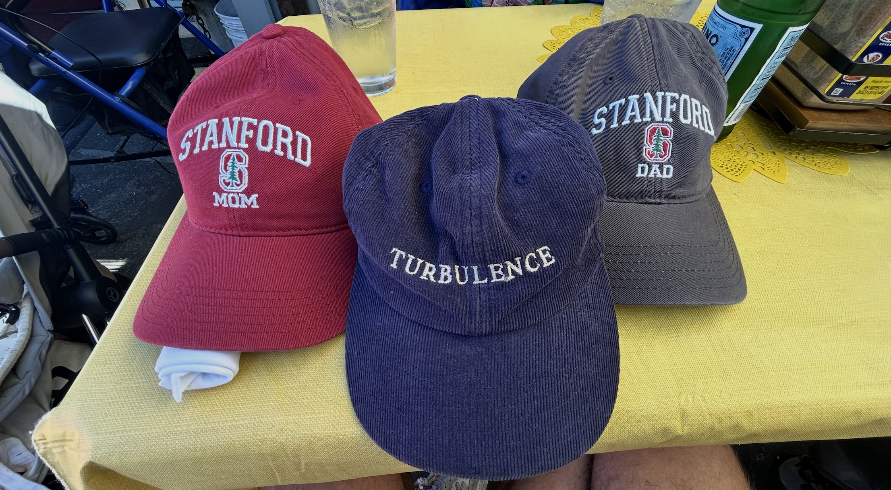

Multi-Stage Neural Networks for PDEs
[Report]
CME 215, Prof. Ching-Yao Lai
MS ME @ Stanford University
Research Intern at NVIDIA, DCE team
Building numerical and machine-learning methods for physical systems. I'm drawn to open-ended, high-impact research in computational science, understanding complex and nonlinear systems through simulation.

